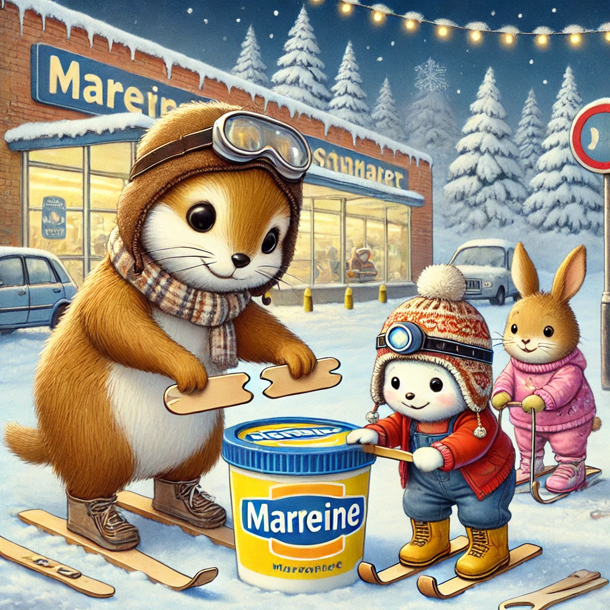
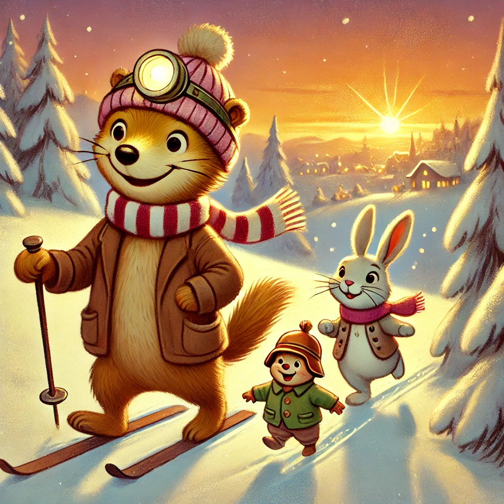

Es war einmal ein Wiesel namens Winnie, das oben auf dem Knabbereienregal eines Supermarkts in Leknes auf den Lofoten wohnte. Obwohl Winnie nun wirklich kein Fan von Sport und Bewegung im Allgemeinen war, wirkte Schnee eine magische Anziehung auf sie aus. So beschloss Winnie, dass es an der Zeit war, Skilaufen zu lernen. Natürlich gab es im Supermarkt keine wieselgroßen Ski, aber Winnie musste sich nicht lange überreden und aß vier Eis am Stiel - für jeden Fuß ein Stielski.
Nachdem sie aus ihrem ersten Ausflug in den Schnee gelernt hatte, ludt sie Biep und Herrn Hase ein, sie zu begleiten. Herr Hase hatte allerdings zu viel Angst, sich auf Skier zu trauen uns nahm einen Magarinendeckel als Schlitten mit. Biep schloss sich ihm an. Die drei stapften durch den tiefen Schnee über den Parkplatz bis an den kleinen Hügel, der zu einem kleinen Waldstück führte. Die Bäume waren mit einer dichten weißen Schneeschicht dekoriert und sahen sehr nach Weihnachten aus.

Die drei machten sich bereit. Biep stieg hinter Herrn Hase auf den Magarinendeckel und Winnie schnallte sich die Einsstiele unter die Pfoten. Einmal tief durchgeatmet und "huuiiiii" ging es den Hügel hinunter Richtung Wald. Winnie schrie vor Vergnügen "Wuuuhhhhiiii, ich flieeege!", verlor dann aber die Balance und fing an von links nach rechts zu schlingern. Herr Hase und Biep steuerten in ihre Richtung und Biep reichte Winnie seine Hand, bis sie wieder stabil gerade aus fuhr. Unten angekommen strahlten sich die drei an. Mit roten Wangen stapften sie den Hügel hinauf, um sich wieder und wieder mit lautem Lachen und Gejohle hinabzurasen.
"Vielleicht ist Sport ja doch etwas für mich" keuchte Winnie heiter und außer Atem. Erst als es dämmerte machten sich die drei auf den Weg nach Hause.